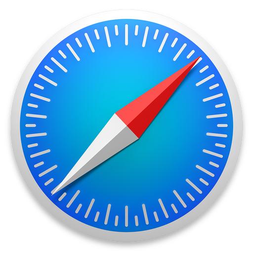

Google Chrome 浏览速度更快
Google Chrome是由Google开发的网页浏览器。中文名曾短暂用过“铬浏览器”， 后期中文名使用“酷容浏览器”。相应的开源计划名为Chromium，其采用BSD许可证授权并开放源代码，但Google Chrome本身是非自由软件，因此未开放源代码。
Mozilla Firefox 尽情地上网浏览
Mozilla Firefox（简称Firefox），中文俗称火狐，是一个自由及开源的网页浏览器，由Mozilla基金会及其子公司Mozilla公司开发。Firefox支持Windows、OS X及Linux，其移动版支持Android及Firefox OS，这些版本的Firefox使用Gecko来排版网页。
Safari 更智能，更强大
Safari是苹果公司所开发，并自带于OS X的网页浏览器。Safari在2003年1月7日首度发行测试版，并从Mac OS X v10.3开始成为OS X的默认浏览器，也是iOS自带的默认浏览器。Safari使用苹果自家的WebKit来进行网页排版及运行JavaScript。

Opera 快速又安全
Opera是由Opera软件公司所开发的网页浏览器。最新版本可用于Microsoft Windows、OS X和Linux操作系统，并使用Blink排版引擎。而早期版本则使用Presto排版引擎。
IE 逐渐走入历史
Internet Explorer（旧称Microsoft Internet Explorer和Windows Internet Explorer，简称IE或MSIE），是微软所开发的一系列图形用户界面网页浏览器。自从1995年开始，自带在各个新版本的Windows作业系统作为默认浏览器，也是微软Windows操作系统的一个组成部分。